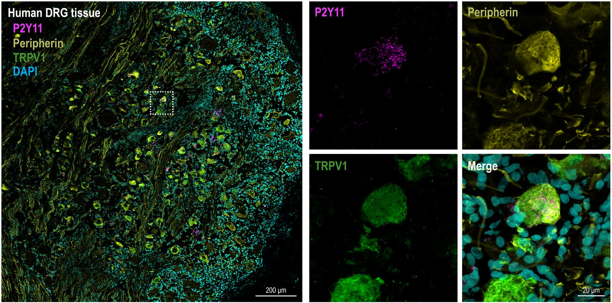
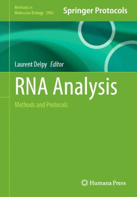
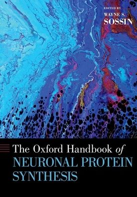
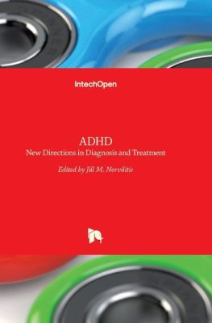

Circular RNAs in human pain · UNM School of Medicine
The hidden RNA layer of human pain
We study circular RNAs (circRNAs), a class of RNA that many standard sequencing methods miss, in human pain-sensing neurons. We mapped the circRNA landscape of human dorsal root ganglia and found that opioid exposure is associated with changes in them. Our goal is to add this hidden layer to the human pain atlas and turn it into new non-addictive treatments.
43circular RNAs changed in opioid-exposed human DRG (PAIN 2026, Editor's Choice)
P2RY11a morphine-induced receptor gene that mice and rats do not have (Cells 2026)
1.5×New Mexico's opioid overdose death rate compared with the U.S. (24.1 vs 16.0 per 100,000 in 2024, KFF)
Our focus
The circular RNA layer of human pain
What they are
Loops of RNA
Circular RNAs form when a gene's RNA is spliced back onto itself. They are extraordinarily enriched in the mammalian brain and highly enriched in synapses.
Human pain atlases were built to read linear RNAs with poly(A) tails, the RNAs that define cell types. CircRNAs lack a poly(A) tail, and in RNA sequencing they are distinguished from linear RNA only by reads spanning the back-splice junction, so these methods largely miss them.
Using total RNA sequencing of donor DRG, we characterized the circRNA landscape of human pain-sensing tissue and showed that opioid exposure is associated with lower overall abundance, including reduced circNTRK2.
Our goal is to add the circular RNA layer to the human pain atlas, cell type by cell type, and to test which circRNAs shape pain and the response to opioids. New to circRNAs? Start with our circRNA in pain resource.
Why we study human neurons
Many pain treatments that work in rodents have not worked in people. We work with dorsal root ganglia donated through New Mexico Donor Services and with human stem cell-derived neurons, so our findings start where patients are.
Human-specific biology
Some human pain genes are missing in mice
Morphine strongly switches on P2RY11 in human pain-sensing neurons. Mice and rats lack this gene, so rodent studies cannot detect it.
Neurons from different human donors responded differently to gabapentin, a common pain drug, and RNA sequencing of DRG from the more responsive donor pointed to the pathways involved.
Research is the freedom of being able to ask questions, make hypotheses, test them, make mistakes, and solve problems along the way. It is not just about publishing papers or getting grants, which are also important, but having the ability to use creativity, follow clues, and work hard, hoping that one day what we have learned in the lab can positively impact the lives of those who are suffering from chronic conditions such as ongoing pain.
Join us
We are recruiting graduate students, postdoctoral fellows, and undergraduates interested in RNA biology, human sensory neuroscience, and pain.
Supported by the National Institutes of Health (NIH HEAL Initiative through NCATS and NINDS, and NIGMS), UNM Health Sciences Center, the RNA Society, and Anthropic. See funding
Research
RNA regulation in human sensory neurons
We study how RNA regulation in human sensory neurons shapes chronic pain and the response to opioids. Most of what is known about pain biology comes from rodents, and some human pain pathways have no rodent counterpart. Thus, we work directly with human dorsal root ganglia (DRG) from organ donors and human stem cell-derived nociceptors, and we use mouse models to test mechanisms.
Circular RNAs in the human pain axis
Circular RNAs (circRNAs) are stable, covalently closed RNAs that can regulate gene expression. Using high-coverage total RNA sequencing, we mapped the circRNA landscape of human DRG and compared tissue from opioid-exposed donors with age- and sex-matched controls. Opioid exposure was associated with a global reduction in circRNA abundance and with changes in 43 differentially expressed circRNAs. Among these, circNTRK2, derived from the gene encoding the TrkB neurotrophin receptor, was reduced both in opioid-exposed tissue and after repeated morphine exposure in a nociceptor-like cell line (Koch et al., Pain 2026, Editor's Choice). We are now testing how opioid-responsive circRNAs regulate nociceptor function.
Single-cell and spatial atlases of human DRG were designed to capture the linear, polyadenylated RNAs that define cell types, and they now give the field a shared reference. CircRNAs lack a poly(A) tail, and in RNA sequencing they are distinguished from linear RNA only by reads spanning the back-splice junction (Szabo and Salzman, Nat Rev Genet 2016), so they are not yet part of that reference. Our long-term goal is to add this circular layer to the human pain atlas, using total RNA sequencing, long-read sequencing, and spatial methods that can be registered to existing cell-type maps.
Human DRG
Dorsal root ganglia donated by organ donors, with and without opioid exposure.
Total RNA sequencing
Keeps RNAs that lack a poly(A) tail, including circRNAs, which poly(A)-based methods largely miss.
Back-splice junction
CircRNAs are identified by sequencing reads that span the back-splice junction, where the loop is closed.
Opioid exposure
Associated with lower overall circRNA abundance and 43 differentially expressed circRNAs, including circNTRK2.
Using time-series RNA sequencing of human iPSC-derived nociceptors, we found that P2RY11, which encodes the purinergic receptor P2Y11, was the most robustly induced transcript after morphine exposure. P2Y11 is expressed in human DRG neurons, including peripherin- and TRPV1-positive nociceptors, and its immunoreactivity increased after morphine (Cells 2026). Because P2RY11 has no mouse or rat ortholog, this pathway cannot be studied in standard mouse or rat models.

P2Y11 co-localizes with peripherin and TRPV1 in human DRG tissue. Boxed region enlarged at right. From Demeter et al., Cells 2026, Figure 3B (CC BY).
Human DRG pharmacology
We test analgesics directly on human DRG tissue. Our study of gabapentin revealed donor-specific electrophysiological and transcriptomic profiles, which suggests that individual variation in human nociceptors may shape drug response (Demeter et al., Mol Pain 2025).
Chemotherapy-induced neuropathy
Oxaliplatin, a common chemotherapy drug, frequently causes peripheral neuropathy, which can be painful and long-lasting, and no treatment is approved to prevent it. Supported by an NIH HEAL Initiative R03, we are testing whether the protein PRR14 shapes how human sensory neurons respond to oxaliplatin, using human DRG tissue and cultured human DRG neurons (NIH RePORTER).
Human tissue and technology platforms
Dr. de la Peña directs a satellite Human Tissue Repository operated with New Mexico Donor Services, which banks DRG and matched blood from consented organ donors. The lab also applies spatial transcriptomics (10x Genomics Xenium) to map RNA expression in human DRG at single-cell resolution.
Foundations: translational control in pain
During postdoctoral training, Dr. de la Peña led or contributed to work showing that RNA control mechanisms in DRG neurons shape pain plasticity. This work showed that inhibiting nonsense-mediated decay induces nociceptive sensitization through the integrated stress response (de la Peña et al., J Neurosci 2023), that the RNA-binding protein HuR is integral to nociceptor function in mice and humans (Kunder et al., J Neurosci 2022), and that a peptide encoded by an upstream open reading frame promotes pain sensitization (Barragan-Iglesias et al., Pain 2021). It also identified Arc as a regulator of neurogenic inflammation in the skin (de la Peña et al., J Neurosci 2021) and c-Fos as a downstream target of S6 kinase signaling in inflammatory pain (de la Peña et al., Br J Pharmacol 2021).
Before pain research, Dr. de la Peña's work in South Korea (1) defined the long-term effects of adolescent cigarette smoke exposure, (2) evaluated the abuse potential of anesthetics and novel psychoactive substances, (3) developed transcriptomic models of ADHD-like phenotypes, and (4) characterized natural products with sedative, anxiolytic, and antidepressant-like effects.
People
The team
We are looking for motivated students and researchers who are passionate about neuroscience, molecular biology, and pain research.
June Bryan I. de la Peña, MS, PhD
Principal Investigator
Hello, I'm Bryan! My journey began in the humble town of Capoocan, Leyte in the Philippines. I'm a Registered Nurse, holding a Bachelor's degree in Nursing from Western Leyte College of Ormoc City. My fascination with the human body and its intricate workings led me to dedicate my career to helping others. It was during this time that I discovered my passion for research.
To further my education and delve into the world of research, I pursued advanced studies at Sahmyook University in Seoul, South Korea. There, I earned both my Master's and PhD degrees in Pharmacology, specializing in Neuropharmacology. Subsequently, I pursued postdoctoral training in molecular biology and functional genomics at the University of Texas at Dallas and later at the University of Wisconsin-Madison.
Today, I am an Assistant Professor of Research in the Department of Anesthesiology & Critical Care Medicine, with a secondary appointment in the Department of Neurosciences, at the University of New Mexico School of Medicine, where I founded my lab in September 2023 as part of the Translational Pain Research Group. I also co-founded the New Mexico RNA Club, an RNA Society-accredited RNA Salon, and serve as a DOST Balik Scientist, returning to the Philippines to help build neuroscience research capacity.
My research primarily focuses on unraveling the intricate molecular mechanisms underlying chronic pain and its associated disorders, including addiction, depression, and anxiety. My ultimate goal is to develop effective and non-addictive pain therapeutics. I'm deeply passionate about my research because I firmly believe it has the potential to make a significant impact on the lives of millions of individuals who suffer from chronic pain.
Co-founder and organizer, New Mexico RNA Club, an RNA Society-accredited RNA Salon
DOST Balik Scientist, Republic of the Philippines (2021, 2022)
Lab members
Postdoc and research staff
Nicole Bon A. Campomayor, MS, PhD
Postdoctoral Fellow
Bon investigates the neuromolecular mechanisms that drive chronic pain, with the long-term goal of contributing to non-addictive pain therapeutics.
Full bio
Bon grew up in the coastal town of Carigara, Leyte in the Philippines, where an early fascination with marine life and the natural world set the foundation for his research journey. He earned his bachelor's degree in Marine Biology from Visayas State University (ViSCA), focusing on phytoplankton ecology, before pursuing graduate studies abroad. At Sahmyook University in Seoul, South Korea, he completed his MS in Convergence Science specializing in plant cytogenetics. His work included developing microsatellite probes for subgenome discrimination in economically valued crops.
He later transitioned into neuroscience and completed his PhD in Convergence Science with a focus on neuropharmacology. His doctoral work examined molecular pathways underlying Alzheimer's disease, Parkinson's disease, major depressive disorder, sleep and chronic stress-related dysfunction, aging-associated cognitive decline, and drug addiction using rodent models. His research spans molecular, cellular, and behavioral approaches.
In the de la Peña Lab within the Department of Anesthesiology & Critical Care Medicine at the University of New Mexico, Bon investigates the neuromolecular mechanisms that drive chronic pain. His long-term goal is to contribute to the development of non-addictive pain therapeutics that can meaningfully improve the lives of individuals living with persistent pain.
Jenna Demeter, MS
Research Scientist
Jenna harnesses the rich information contained within human transcriptomic data and employs complementary wet lab approaches to identify cellular mechanisms and therapeutic targets of various chronic pain conditions. She is first author of the lab's P2RY11 study (Cells 2026) and gabapentin study (Molecular Pain 2025).
Full bio
Jenna grew up in Springfield, Ohio, where she began to appreciate the intricacies of disease, including its cellular basis and multifactorial influences. Jenna further developed her fascination with the cellular and molecular underpinnings of physiology and pathophysiology at the University of Tennessee, Knoxville. She pursued a bachelor's in Biochemistry and Cellular and Molecular Biology and contextualized cellular phenomena in a broader social context through a Public Health minor. There Jenna also gained a deeper understanding of metabolic and nutritional influences on physiology and disease while pursuing a master's in Biomedical Nutrition Science. Her undergraduate and graduate research focused on the interplay of transcriptional and metabolic processes on cellular differentiation and metabolic states, specifically in adipose tissues.
Graduate students
Maddy Koch
PhD Student
Maddy characterizes circular RNAs in the dorsal root ganglia and how opioid exposure changes them. She is first author of the lab's 2026 PAIN Editor's Choice paper on the circRNA landscape of human DRG and of a 2025 Methods in Molecular Biology protocol chapter.
Full bio
Maddy was born and raised in Bradenton, FL and earned a bachelor's in Biology from the University of South Florida. Here, Maddy investigated cryptic genetic diversity in coastal isopod species. Maddy then entered the Biomedical Sciences graduate program in 2021, first working with Dr. Nikolaos Mellios studying circular RNAs (circRNAs) in psychiatric disorders before moving into Dr. de la Peña's lab, where her research focuses on characterizing circRNAs in the dorsal root ganglia and the effects of opioid exposure.
Quisha Jessen Leyrita
MS Student (visiting, MSU-IIT)
Quisha is a Registered Chemist and a graduate student at Mindanao State University-Iligan Institute of Technology (MSU-IIT). Her work focuses on drug repurposing. She is co-mentored by Dr. Charlie Lavilla Jr. at MSU-IIT and supported by DOST-ASTHRDP.
Full bio
Quisha is a Registered Chemist whose lifelong fascination with chemical interactions has evolved into a dedicated research career. Originally from Butuan City, Philippines, she earned her undergraduate degree in Chemistry from Mindanao State University-Iligan Institute of Technology (MSU-IIT).
Currently a graduate student at MSU-IIT and a visiting research scholar at the University of New Mexico Health Sciences Center, Quisha's work primarily focuses on drug repurposing, where she leverages her expertise in computational and bioinorganic chemistry to discover new therapeutic potentials for existing compounds.
Medical students
GF
Gianluca Fuggiti
Medical Student
Madison Hochrein
Medical Student
Madison analyzes demographics and trends in chronic pain patients at UNM Hospital over a ten-year period, bridging research and clinical care. She is a co-author of the lab's circRNA study (Koch et al., PAIN 2026).
Full bio
Madison is a native New Mexican, and was born and raised in Albuquerque, New Mexico. She has always had a deep passion for biology and chemistry and a strong desire to help others. She received her bachelor's degree in Biochemistry from the University of New Mexico with a minor in Spanish. During her time as an undergraduate Madison worked for four years in an engineering lab at Sandia National Laboratories where she focused on additive manufacturing and materials science. She also worked as part of the COVID-19 response team at Sandia National Laboratories during the pandemic to aid in COVID-19 testing for the employees and dependents of three National Laboratories.
In her time as an undergrad, she had a deepened interest in physiology and pharmacology which furthered her interest in medicine and lifelong dream of becoming a physician. She is a medical student at the University of New Mexico School of Medicine, and her research in Dr. de la Peña's lab focuses on data analysis of demographics and trends in chronic pain patients from UNMH over a ten-year period, with the goal of bridging both the research aspect of chronic pain with the clinical aspect to work towards a solution for chronic pain and addiction.
Sean McNally
Medical Student
Sean studies the genetic and neuroimmune mechanisms driving chronic pain conditions. He is second author of the lab's P2RY11 study (Cells 2026).
Full bio
Sean was born and raised in the rural four corners region of northwestern New Mexico. Growing up in one of the most medically underserved regions in the country, Sean was inspired to pursue medicine watching his father's work within rural and tribal communities. From a young age, he became acutely aware of the deep-rooted healthcare disparities faced by rural populations, fueling a lifelong commitment to studying and addressing health inequities.
Sean completed his undergraduate education through the Combined BA/MD Program at the University of New Mexico. Studying at the University of New Mexico and the University of Sheffield in the UK, Sean received a B.A. in Health, Medicine, and Human Values with a concentration in Health, Humanities & Society and a minor in Chemistry from the University of New Mexico in 2024. He is a medical student at the University of New Mexico School of Medicine.
Sean's research interests are shaped by personal and community experiences with chronic pain and neurological illness, particularly among workers in mining, farming, and oil fields who are chronically exposed to neurotoxic substances. In 2023, he joined the Department of Anesthesiology and Critical Care Medicine at UNM as an undergraduate researcher studying the neuroimmune mechanisms underlying chronic neuropathic pain. In 2025, he joined the de la Peña Lab to continue this work, with a focus on the genetic and neuroimmune mechanisms driving chronic pain conditions.
GS
Gracie Swensen
Medical Student
Undergraduate students
MB
Manuel Bustillos Lopez
Undergraduate
IE
Ibrahim Eldenawi
Undergraduate, Psychology
Jeanette Montoya
Undergraduate, Biochemistry
Jeanette is an Albuquerque native and a Biochemistry major at UNM working toward medical school. She is a co-author of the lab's P2RY11 study (Cells 2026).
Full bio
Jeanette is an Albuquerque native through and through, born here, raised here, and fully convinced that nowhere else will ever feel like home. She grew up surrounded by New Mexico sunsets, family, and a whole lot of farming, so staying here for the long run just makes sense to her. She first fell in love with science at Bosque Preparatory School, where hands-on labs and science-heavy coursework hooked her early. Research appeals to her because it's the perfect mix of curiosity, problem-solving, and getting to actually do things, not just read about them. When she's not in class, Jeanette's usually exploring her city, hanging out with the people (and dogs) she loves, or finding new ways to stay connected to the community she plans to be part of forever.
If you are interested in a position in this lab, email jdelapena@salud.unm.edu with your latest CV and a note explaining your background, what projects you might be interested in, and why you want to join the lab.
We currently welcome applications from graduate students, postdoctoral fellows, and undergraduates. UNM undergraduates can also join through BIOM 410 research credit.
Every entry below was checked against PubMed, or against Google Scholar for journals PubMed does not index. Last checked October 2026.
Bold marks Dr. de la Peña.
Submitted
Koch MR, Campomayor NBA, de la Peña JBI. Expanding the Human Sensory Atlas to Circular and Long Non-Coding RNAs. Invited Topical Review, submitted to PAIN.
Research articles
Goins AE, Goyal S, Zurek NA, Demeter JB, Propsom K, Gravelle A, Noor S, Koch MR, de la Peña JBI, Lacagnina MJ, Alles SRA. Sex-specific neuroimmune pathophysiological signatures in a mouse model of chronic back pain.J Pain. 2026;50:106427. doi: 10.1016/j.jpain.2026.106427. PMID: 42674133.
Demeter JB, McNally SD, Koch MR, Thiyagarajan S, Montoya JA, Vega L, Abboud P, Alles SRA, Ehsanian R, de la Peña JBI. Opioid Exposure Induces the Expression of the Purinergic Receptor P2RY11 in Human Nociceptors.Cells. 2026;15(16):1464. doi: 10.3390/cells15161464. PMID: 42645192. PMCID: PMC13511635.
Koch MR, Demeter JB, Hochrein M, Alles SRA, Westlund KN, Ehsanian R, de la Peña JBI. Characterization of the circular RNA landscape of human dorsal root ganglia reveals a neurotrophin-related circRNA is modulated by opioid exposure.Pain. 2026;167(7):1615-1630. doi: 10.1097/j.pain.0000000000003987. PMID: 42152618. Editor's Choice
Zurek NA, Shilling MW, Demeter JB, Ehsanian R, Adams IM, Goins AE, Goyal S, Séguéla P, de la Peña JBI, Kunamneni A, Westlund KN, Alles SR. Humanized anti-P2X4 scFv reduces ATP-induced P2X4 currents and modulates excitability in human DRG neurons.Mol Pain. 2025;21:17448069251376200. doi: 10.1177/17448069251376200. PMID: 40856314. PMCID: PMC12446818.
de la Peña JB, García G, Campbell ZT. Ribosome profiling reveals that post-transcriptional control of Nalf1 by heterogeneous nuclear ribonucleoprotein L is required for paclitaxel-induced neuropathic pain.Pain. 2025;166(9):2091-2102. doi: 10.1097/j.pain.0000000000003577. PMID: 40839605. PMCID: PMC12353069.
Demeter JB, Zurek NA, Koch MR, Goins AE, Holguin CO, Shilling MW, Davis MS, Ehsanian R, Alles SR, de la Peña JBI. Gabapentin's effect on human dorsal root ganglia: Donor-specific electrophysiological and transcriptomic profiles.Mol Pain. 2025;21:17448069251361712. doi: 10.1177/17448069251361712. PMID: 40657722. PMCID: PMC12368406.
de la Peña JB, Chase R, Kunder N, Smith PR, Lou TF, Stanowick A, Suresh P, Shukla T, Butcher SE, Price TJ, Campbell ZT. Inhibition of Nonsense-Mediated Decay Induces Nociceptive Sensitization through Activation of the Integrated Stress Response.J Neurosci. 2023;43(16):2921-2933. doi: 10.1523/JNEUROSCI.1604-22.2023. PMID: 36894318. PMCID: PMC10124962.
Kunder N, de la Peña JB, Lou TF, Chase R, Suresh P, Lawson J, Shukla T, Black B, Campbell ZT. The RNA-Binding Protein HuR Is Integral to the Function of Nociceptors in Mice and Humans.J Neurosci. 2022;42(49):9129-9141. doi: 10.1523/JNEUROSCI.1630-22.2022. PMID: 36270801. PMCID: PMC9761683.
Chase R, de la Peña JB, Smith PR, Lawson J, Lou TF, Stanowick AD, Black BJ, Campbell ZT. Global analyses of mRNA expression in human sensory neurons reveal eIF5A as a conserved target for inflammatory pain.FASEB J. 2022;36(7):e22422. doi: 10.1096/fj.202101933RR. PMID: 35747924. PMCID: PMC10227861.
de la Peña JB, Kunder N, Lou TF, Chase R, Stanowick A, Barragan-Iglesias P, Pancrazio JJ, Campbell ZT. A role for translational regulation by S6 kinase and a downstream target in inflammatory pain.Br J Pharmacol. 2021;178(23):4675-4690. doi: 10.1111/bph.15646. PMID: 34355805. PMCID: PMC9169231.
de la Peña JB, Barragan-Iglesias P, Lou TF, Kunder N, Loerch S, Shukla T, Basavarajappa L, Song J, James DN, Megat S, Moy JK, Wanghzou A, Ray PR, Hoyt K, Steward O, Price TJ, Shepherd J, Campbell ZT. Intercellular Arc Signaling Regulates Vasodilation.J Neurosci. 2021;41(37):7712-7726. doi: 10.1523/JNEUROSCI.0440-21.2021. PMID: 34326146. PMCID: PMC8445061.
Botanas CJ, Perez Custodio RJ, Kim HJ, de la Peña JB, Sayson LV, Ortiz DM, Kim M, Lee HJ, Acharya S, Kim KM, Lee CJ, Ryu JH, Lee YS, Cheong JH. R (-)-methoxetamine exerts rapid and sustained antidepressant effects and fewer behavioral side effects relative to S (+)-methoxetamine.Neuropharmacology. 2021;193:108619. doi: 10.1016/j.neuropharm.2021.108619. PMID: 34023336.
Barragan-Iglesias P, Kunder N, Wanghzou A, Black B, Ray PR, Lou TF, de la Peña JB, Atmaramani R, Shukla T, Pancrazio JJ, Price TJ, Campbell ZT. A peptide encoded within a 5' untranslated region promotes pain sensitization in mice.Pain. 2021;162(6):1864-1875. doi: 10.1097/j.pain.0000000000002191. PMID: 33449506. PMCID: PMC8119312.
Shukla T, de la Peña JB, Perish JM, Ploski JE, Stumpf CR, Webster KR, Thorn CA, Campbell ZT. A Highly Selective MNK Inhibitor Rescues Deficits Associated with Fragile X Syndrome in Mice.Neurotherapeutics. 2021;18(1):624-639. doi: 10.1007/s13311-020-00932-4. PMID: 33006091. PMCID: PMC8116363.
Atmaramani RR, Black BJ, de la Peña JB, Campbell ZT, Pancrazio JJ. Conserved Expression of Nav1.7 and Nav1.8 Contribute to the Spontaneous and Thermally Evoked Excitability in IL-6 and NGF-Sensitized Adult Dorsal Root Ganglion Neurons In Vitro.Bioengineering (Basel). 2020;7(2):44. doi: 10.3390/bioengineering7020044. PMID: 32429423. PMCID: PMC7356605.
Dela Peña IJI, Botanas CJ, de la Peña JB, Custodio RJ, Dela Peña I, Ryoo ZY, Kim BN, Ryu JH, Kim HJ, Cheong JH. The Atxn7-overexpressing mice showed hyperactivity and impulsivity which were ameliorated by atomoxetine treatment: A possible animal model of the hyperactive-impulsive phenotype of ADHD.Prog Neuropsychopharmacol Biol Psychiatry. 2019;88:311-319. doi: 10.1016/j.pnpbp.2018.08.012. PMID: 30125623.
Kim M, Custodio RJ, Botanas CJ, de la Peña JB, Sayson LV, Abiero A, Ryoo ZY, Cheong JH, Kim HJ. The circadian gene, Per2, influences methamphetamine sensitization and reward through the dopaminergic system in the striatum of mice.Addict Biol. 2019;24(5):946-957. doi: 10.1111/adb.12663. PMID: 30091820.
Abiero A, Botanas CJ, Sayson LV, Custodio RJ, de la Peña JB, Kim M, Lee HJ, Seo JW, Ryu IS, Chang CM, Yang JS, Lee YS, Jang CG, Kim HJ, Cheong JH. 5-Methoxy-α-methyltryptamine (5-MeO-AMT), a tryptamine derivative, induces head-twitch responses in mice through the activation of serotonin receptor 2a in the prefrontal cortex.Behav Brain Res. 2019;359:828-835. doi: 10.1016/j.bbr.2018.07.020. PMID: 30053461.
Custodio RJP, Botanas CJ, de la Peña JB, Dela Peña IJ, Kim M, Sayson LV, Abiero A, Ryoo ZY, Kim BN, Kim HJ, Cheong JH. Overexpression of the Thyroid Hormone-Responsive (THRSP) Gene in the Striatum Leads to the Development of Inattentive-like Phenotype in Mice.Neuroscience. 2018;390:141-150. doi: 10.1016/j.neuroscience.2018.08.008. PMID: 30138648.
Botanas CJ, Yoon SS, de la Peña JB, Dela Peña IJ, Kim M, Custodio RJ, Woo T, Seo JW, Jang CG, Yang JS, Yoon YM, Lee YS, Kim HJ, Cheong JH. A new synthetic drug 5-(2-aminopropyl)indole (5-IT) induces rewarding effects and increases dopamine D1 receptor and dopamine transporter mRNA levels.Behav Brain Res. 2018;341:122-128. doi: 10.1016/j.bbr.2017.12.026. PMID: 29288746.
Custodio RJP, Botanas CJ, Yoon SS, de la Peña JB, Dela Peña IJ, Kim M, Woo T, Seo JW, Jang CG, Kwon YH, Kim NY, Lee YS, Kim HJ, Cheong JH. Evaluation of the Abuse Potential of Novel Amphetamine Derivatives with Modifications on the Amine (NBNA) and Phenyl (EDA, PMEA, 2-APN) Sites.Biomol Ther (Seoul). 2017;25(6):578-585. doi: 10.4062/biomolther.2017.141. PMID: 29081089. PMCID: PMC5685426.
Botanas CJ, de la Peña JB, Custodio RJ, Dela Peña IJ, Kim M, Woo T, Kim HJ, Kim HI, Chang Cho M, Lee YS, Cheong JH. Methoxetamine produces rapid and sustained antidepressant effects probably via glutamatergic and serotonergic mechanisms.Neuropharmacology. 2017;126:121-127. doi: 10.1016/j.neuropharm.2017.08.038. PMID: 28867363.
Dela Peña I, Dela Peña IJ, de la Peña JB, Kim HJ, Shin CY, Han DH, Kim BN, Ryu JH, Cheong JH. Methylphenidate and Atomoxetine-Responsive Prefrontal Cortical Genetic Overlaps in "Impulsive" SHR/NCrl and Wistar Rats.Behav Genet. 2017;47(5):564-580. doi: 10.1007/s10519-017-9861-3. PMID: 28744604.
Dela Peña IJI, Dela Peña I, de la Peña JB, Kim HJ, Sohn A, Shin CY, Han DH, Kim BN, Ryu JH, Cheong JH. Transcriptional profiling of SHR/NCrl prefrontal cortex shows hyperactivity-associated genes responsive to amphetamine challenge.Genes Brain Behav. 2017;16(7):664-674. doi: 10.1111/gbb.12388. PMID: 28422445.
Dela Peña IJI, Kim HJ, Botanas CJ, de la Peña JB, Van Le TH, Nguyen MD, Park JH, Cheong JH. The psychopharmacological activities of Vietnamese ginseng in mice: characterization of its psychomotor, sedative-hypnotic, antistress, anxiolytic, and cognitive effects.J Ginseng Res. 2017;41(2):201-208. doi: 10.1016/j.jgr.2016.03.005. PMID: 28413325. PMCID: PMC5386119.
Botanas CJ, Yoon SS, de la Peña JB, Dela Peña IJ, Kim M, Woo T, Seo JW, Jang CG, Park KT, Lee YH, Lee YS, Kim HJ, Cheong JH. The Abuse Potential of α-Piperidinopropiophenone (PIPP) and α-Piperidinopentiothiophenone (PIVT), Two New Synthetic Cathinones with Piperidine Ring Substituent.Biomol Ther (Seoul). 2017;25(2):122-129. doi: 10.4062/biomolther.2016.241. PMID: 28173643. PMCID: PMC5340536.
Botanas CJ, Yoon SS, de la Peña JB, Dela Peña IJ, Kim M, Woo T, Seo JW, Jang CG, Park KT, Lee YH, Lee YS, Kim HJ, Cheong JH. The abuse potential of two novel synthetic cathinones with modification on the alpha-carbon position, 2-cyclohexyl-2-(methylamino)-1-phenylethanone (MACHP) and 2-(methylamino)-1-phenyloctan-1-one (MAOP), and their effects on dopaminergic activity.Pharmacol Biochem Behav. 2017;153:160-167. doi: 10.1016/j.pbb.2016.12.017. PMID: 28063946.
Botanas CJ, Yoon SS, de la Peña JB, Dela Peña IJ, Kim M, Woo T, Seo JW, Jang CG, Park KT, Lee YH, Lee YS, Kim HJ, Cheong JH. A novel synthetic cathinone, 2-(methylamino)-1-(naphthalen-2-yl) propan-1-one (BMAPN), produced rewarding effects and altered striatal dopamine-related gene expression in mice.Behav Brain Res. 2017;317:494-501. doi: 10.1016/j.bbr.2016.10.016. PMID: 27737791.
Kim M, Kim HJ, Kim SM, de la Peña JB, dela Peña IJ, Botanas CJ, Woo T, et al.Protection against electroshock- and pentylenetetrazol-induced seizures by the water extract of Rehmannia glutinous can be mediated through GABA receptor-chloride channel complexes.Nat Prod Sci. 2017;23(1):40-45.
de la Peña JB, Ahsan HM, Botanas CJ, Dela Peña IJ, Woo T, Kim HJ, Cheong JH. Cigarette smoke exposure during adolescence but not adulthood induces anxiety-like behavior and locomotor stimulation in rats during withdrawal.Int J Dev Neurosci. 2016;55:49-55. doi: 10.1016/j.ijdevneu.2016.09.007. PMID: 27647343.
Dela Peña IJI, Kim HJ, de la Peña JB, Kim M, Botanas CJ, You KY, Woo T, Lee YS, Jung JC, Kim KM, Cheong JH. A tryptic hydrolysate from bovine milk αs1-casein enhances pentobarbital-induced sleep in mice via the GABAA receptor.Behav Brain Res. 2016;313:184-190. doi: 10.1016/j.bbr.2016.07.013. PMID: 27401107.
Botanas CJ, Lee H, de la Peña JB, Dela Peña IJ, Woo T, Kim HJ, Han DH, Kim BN, Cheong JH. Rearing in an enriched environment attenuated hyperactivity and inattention in the Spontaneously Hypertensive Rats, an animal model of Attention-Deficit Hyperactivity Disorder.Physiol Behav. 2016;155:30-7. doi: 10.1016/j.physbeh.2015.11.035. PMID: 26656767.
Tampus R, Yoon SS, de la Peña JB, Botanas CJ, Kim HJ, Seo JW, Jeong EJ, Jang CG, Cheong JH. Assessment of the Abuse Liability of Synthetic Cannabinoid Agonists JWH-030, JWH-175, and JWH-176.Biomol Ther (Seoul). 2015;23(6):590-6. doi: 10.4062/biomolther.2015.120. PMID: 26535085. PMCID: PMC4624076.
dela Peña IJ, Hong E, de la Peña JB, Kim HJ, Botanas CJ, Hong YS, Hwang YS, Moon BS, Cheong JH. Milk Collected at Night Induces Sedative and Anxiolytic-Like Effects and Augments Pentobarbital-Induced Sleeping Behavior in Mice.J Med Food. 2015;18(11):1255-61. doi: 10.1089/jmf.2015.3448. PMID: 26501383. PMCID: PMC4638207.
Botanas CJ, de la Peña JB, Dela Pena IJ, Tampus R, Kim HJ, Yoon SS, Seo JW, Jeong EJ, Cheong JH. Evaluation of the abuse potential of AM281, a new synthetic cannabinoid CB1 receptor antagonist.Eur J Pharmacol. 2015;766:135-41. doi: 10.1016/j.ejphar.2015.10.004. PMID: 26450088.
dela Peña IJ, Hong E, Kim HJ, de la Peña JB, Woo TS, Lee YS, Cheong JH. Artemisia capillaris Thunberg Produces Sedative-Hypnotic Effects in Mice, Which are Probably Mediated Through Potentiation of the GABAA Receptor.Am J Chin Med. 2015;43(4):667-79. doi: 10.1142/S0192415X1550041X. PMID: 26119953.
de la Peña JB, Ahsan HM, Tampus R, Botanas CJ, dela Peña IJ, Kim HJ, Sohn A, dela Peña I, Shin CY, Ryu JH, Cheong JH. Cigarette smoke exposure during adolescence enhances sensitivity to the rewarding effects of nicotine in adulthood, even after a long period of abstinence.Neuropharmacology. 2015;99:9-14. doi: 10.1016/j.neuropharm.2015.06.014. PMID: 26116818.
Dela Peña I, Bang M, Lee J, de la Peña JB, Kim BN, Han DH, Noh M, Shin CY, Cheong JH. Common prefrontal cortical gene expression profiles between adolescent SHR/NCrl and WKY/NCrl rats which showed inattention behavior.Behav Brain Res. 2015;291:268-276. doi: 10.1016/j.bbr.2015.05.012. PMID: 26048425.
Botanas CJ, de la Peña JB, Dela Peña IJ, Tampus R, Yoon R, Kim HJ, Lee YS, Jang CG, Cheong JH. Methoxetamine, a ketamine derivative, produced conditioned place preference and was self-administered by rats: Evidence of its abuse potential.Pharmacol Biochem Behav. 2015;133:31-6. doi: 10.1016/j.pbb.2015.03.007. PMID: 25792291.
dela Peña I, Gonzales EL, de la Peña JB, Kim BN, Han DH, Shin CY, Cheong JH. Individual differences in novelty-seeking behavior in spontaneously hypertensive rats: Enhanced sensitivity to the reinforcing effect of methylphenidate in the high novelty-preferring subpopulation.J Neurosci Methods. 2015;252:48-54. doi: 10.1016/j.jneumeth.2014.08.019. PMID: 25169048.
dela Peña I, de la Peña JB, Kim BN, Han DH, Noh M, Cheong JH. Gene expression profiling in the striatum of amphetamine-treated spontaneously hypertensive rats which showed amphetamine conditioned place preference and self-administration.Arch Pharm Res. 2015;38(5):865-75. doi: 10.1007/s12272-014-0470-x. PMID: 25163681.
Ahsan HM, de la Peña JB, Botanas CJ, Kim HJ, Yu GY, Cheong JH. Conditioned place preference and self-administration induced by nicotine in adolescent and adult rats.Biomol Ther (Seoul). 2014;22(5):460-6. doi: 10.4062/biomolther.2014.056. PMID: 25414778. PMCID: PMC4201227.
de la Peña JB, Ahsan HM, Botanas CJ, Sohn A, Yu GY, Cheong JH. Adolescent nicotine or cigarette smoke exposure changes subsequent response to nicotine conditioned place preference and self-administration.Behav Brain Res. 2014;272:156-64. doi: 10.1016/j.bbr.2014.06.044. PMID: 24991754.
de la Peña JB, Ahsan HM, Dela Peña IJ, Park HB, Kim HJ, Sohn A, Kim YT, Cheong JH. Propofol pretreatment induced place preference and self-administration of the tiletamine-zolazepam combination: implication on drug of abuse substitution.Am J Drug Alcohol Abuse. 2014;40(4):321-6. doi: 10.3109/00952990.2014.920850. PMID: 24950106.
Dela Peña IJ, Yoon SY, de la Peña JB, Park S, Yoon B, Kim HJ, Paek SH, Seo YK, Moon BS, Cheong JH. The ameliorating effect of Rosa roxburghii against ethanol-induced psychomotor alterations in rats.Am J Drug Alcohol Abuse. 2014;40(1):75-81. doi: 10.3109/00952990.2013.846349. PMID: 24266614.
de la Peña JB, Kim CA, Lee HL, Yoon SY, Kim HJ, Hong EY, Kim GH, Ryu JH, Lee YS, Kim KM, Cheong JH. Luteolin mediates the antidepressant-like effects of Cirsium japonicum in mice, possibly through modulation of the GABAA receptor.Arch Pharm Res. 2014;37(2):263-9. doi: 10.1007/s12272-013-0229-9. PMID: 23925560.
dela Peña IJ, de la Peña JB, Yoon SY, Kim HJ, Lee JH, Paek SH, Seo YK, et al.Supplementation of Laurus nobilis attenuate ethanol-induced psychomotor alterations in rats.Nat Prod Sci. 2014;20(1):44-50.
de la Peña JB, Cheong JH.The ameliorating effect of Hoveniae Semen seu Fructus extract against ethanol-induced psychomotor alterations in rats.Yakhak Hoeji. 2014;58(5):300-306.
de la Peña JB, dela Peña IJ, Lee HL, dela Peña I, Shin CY, Sohn AR, Cheong JH. Pre-exposure to ethanol, but not to caffeine and nicotine, induced place preference and self-administration of the NMDA receptor antagonist-benzodiazepine combination, Zoletil®.Pharmacol Biochem Behav. 2013;110:231-7. doi: 10.1016/j.pbb.2013.07.016. PMID: 23916424.
Liu X, Hong SI, Park SJ, de la Peña JB, Che H, Yoon SY, Kim DH, Kim JM, Cai M, Risbrough V, Geyer MA, Shin CY, Cheong JH, Park H, Lew JH, Ryu JH. The ameliorating effects of 5,7-dihydroxy-6-methoxy-2(4-phenoxyphenyl)-4H-chromene-4-one, an oroxylin A derivative, against memory impairment and sensorimotor gating deficit in mice.Arch Pharm Res. 2013;36(7):854-63. doi: 10.1007/s12272-013-0106-6. PMID: 23543630.
Dela Peña IJ, Lee HL, Yoon SY, de la Peña JB, Kim HK, Hong EY, Cheong JH. The ethanol extract of Cirsium japonicum increased chloride ion influx through stimulating GABA(A) receptor in human neuroblastoma cells and exhibited anxiolytic-like effects in mice.Drug Discov Ther. 2013;7(1):18-23. doi: 10.5582/ddt.2013.v7.1.18. PMID: 23524939.
de la Peña JB, Lee HL, Yoon SY, Kim GH, Lee YS, Cheong JH. The involvement of magnoflorine in the sedative and anxiolytic effects of Sinomeni Caulis et Rhizoma in mice.J Nat Med. 2013;67(4):814-21. doi: 10.1007/s11418-013-0754-3. PMID: 23456265.
de la Peña JB, Yoon SY, de la Peña IC, Lee HL, I de la Peña IJ, Cheong JH. Pre-exposure to related substances induced place preference and self-administration of the NMDA receptor antagonist-benzodiazepine combination, zoletil.Behav Pharmacol. 2013;24(1):20-8. doi: 10.1097/FBP.0b013e32835cf442. PMID: 23238086.
de la Peña JB, Lee HC, de la Peña IC, Woo TS, Yoon SY, Lee HL, Han JS, Lee JI, Cho YJ, Shin CY, Cheong JH. Rewarding and reinforcing effects of the NMDA receptor antagonist-benzodiazepine combination, Zoletil®: difference between acute and repeated exposure.Behav Brain Res. 2012;233(2):434-42. doi: 10.1016/j.bbr.2012.05.038. PMID: 22659394.
dela Peña I, Yoon SY, Lee JC, de la Peña JB, Sohn AR, Ryu JH, Shin CY, Cheong JH. Methylphenidate treatment in the spontaneously hypertensive rat: influence on methylphenidate self-administration and reinstatement in comparison with Wistar rats.Psychopharmacology (Berl). 2012;221(2):217-26. doi: 10.1007/s00213-011-2564-1. PMID: 22086360.
Review articles
de la Peña JBI, Song JJ, Campbell ZT. RNA control in pain: Blame it on the messenger.Wiley Interdiscip Rev RNA. 2019;10(6):e1546. doi: 10.1002/wrna.1546. PMID: 31090211. PMCID: PMC7721054.
Botanas CJ, de la Peña JB, Kim HJ, Lee YS, Cheong JH. Methoxetamine: A foe or friend?Neurochem Int. 2019;122:1-7. doi: 10.1016/j.neuint.2018.10.020. PMID: 30365979.
Kim M, de la Peña JB, Cheong JH, Kim HJ. Neurobiological Functions of the Period Circadian Clock 2 Gene, Per2.Biomol Ther (Seoul). 2018;26(4):358-367. doi: 10.4062/biomolther.2017.131. PMID: 29223143. PMCID: PMC6029676.
de la Peña JB, Dela Peña IJ, Custodio RJ, Botanas CJ, Kim HJ, Cheong JH. Exploring the Validity of Proposed Transgenic Animal Models of Attention-Deficit Hyperactivity Disorder (ADHD).Mol Neurobiol. 2018;55(5):3739-3754. doi: 10.1007/s12035-017-0608-1. PMID: 28534274.
de la Peña JB, Cheong JH. The abuse liability of the NMDA receptor antagonist-benzodiazepine (tiletamine-zolazepam) combination: evidence from clinical case reports and preclinical studies.Drug Test Anal. 2016;8(8):760-7. doi: 10.1002/dta.1987. PMID: 27341080.
Book chapters

Koch MR, Demeter JB, Chase R, Kunder NP, Lou TF, Shukla TN, de la Peña JBI. Inhibition of Nonsense-Mediated Decay in Dorsal Root Ganglion Neurons. In: Delpy L, ed. RNA Analysis. Methods in Molecular Biology. 2025;2962:217-235. doi: 10.1007/978-1-0716-4726-4_15. PMID: 40699432.

Loerch S, de la Peña JB, Song J, Pancrazio JJ, Price TJ, Campbell ZT. Translational controls in pain. In: Sossin WS, ed. The Oxford Handbook of Neuronal Protein Synthesis. Oxford University Press; 2018. doi: 10.1093/oxfordhb/9780190686307.001.0001.

de la Peña JB, Botanas CJ, Tampus R, dela Peña IJ, Kim HJ, dela Peña I, Cheong JH. Updates on the use of natural treatments for attention-deficit hyperactivity disorder (ADHD). In: Norvilitis JM, ed. ADHD: New Directions in Diagnosis and Treatment. InTechOpen; 2015:351. doi: 10.5772/60840.
Conference proceedings
Dolui S, Reddy S, de la Peña JB, Song J, Tai H, Campbell Z, Hoyt K. On the potential uses of ultrasound imaging for the detection of anesthesia-induced neuronal apoptosis in the developing brain.2020 IEEE International Ultrasonics Symposium (IUS). 2020:1-4.
Funding
Support for our research
Our research is supported by the following sponsors. We are grateful to the organ donors and their families, and to New Mexico Donor Services, whose generosity makes our human tissue research possible.
Sponsor
Award
Title
Role
Period
NIH HEAL Initiative, National Center for Advancing Translational Sciences (funded by NINDS)
Investigating the Role of CircRNAs in Pain and Nociceptive Sensitization
Project Leader
2025 to 2027
UNM Health Sciences Center
Pilot Funding Program
Pain, opioids, and circular RNAs
PI
2026
Anthropic
AI for Science award
Role of circRNA in pain and nociception
PI
2026
RNA Society, co-sponsored by Lexogen
RNA Salon award
New Mexico RNA Club
Organizer
2025 to 2028
UNM Department of Anesthesiology & Critical Care Medicine
Start-up funds
Lab establishment
PI
Since 2023
NIH awards as listed in NIH RePORTER, checked October 2026.
News
Lab news
Milestones, papers, and events from the de la Peña Lab.
Date
News
Oct 2026
The lab receives an AI for Science award from Anthropic for "Role of circRNA in pain and nociception."
Sept 24, 2026
New Mexico RNA Club annual retreat and anniversary, with invited speaker Dr. Praveen Patidar (New Mexico Tech).
Sept 2026
The RNA Society renews the New Mexico RNA Club's RNA Salon award for two years (2026 to 2028).
Sept 2026
NIH NIGMS continues funding for the lab's AIM CoBRE research project on circular RNAs in pain for 2026 to 2027.
Aug 31, 2026
Study of sex-specific neuroimmune signatures in a mouse model of chronic back pain published in The Journal of Pain, in collaboration with the Alles Lab.
Aug 15, 2026
Jenna Demeter's first-author paper identifying P2RY11 as an opioid-induced receptor in human nociceptors published in Cells.
Jul 2026
Dr. Nicole Bon A. Campomayor joins the lab as a postdoctoral fellow.
May 7, 2026
Maddy Koch's first-author paper on the circular RNA landscape of human DRG published online in PAIN and selected as an Editor's Choice.
Interview with CNN Philippines. Dr. de la Peña was a resource person on CNN Philippines and DOSTv's ExperTalk, discussing the cognitive benefits of brain puzzles and his path from Leyte to South Korea, the USA, and his own lab at UNM. Watch the interview
A starting point for anyone studying circular RNAs (circRNAs) in pain: the basics, a curated reading list, methods notes, human reference datasets, and data from our lab.
circRNA 101
What they are
Closed loops of RNA
CircRNAs form by back-splicing, which links the two ends of an RNA into a closed loop. Because of these linked ends, they resist exonucleases that degrade linear RNA.
Detection is typically based on short-read RNA sequencing processed with computational tools. In a benchmark of 16 tools, precision was similar, but the number of circRNAs called differed widely.
Curated by the lab and checked against PubMed in October 2026. Each summary restates the paper's own abstract. Newest first within each group. Know a paper we missed? Send it to us.
Human tissue
Studies that measured circRNAs in human samples.
Koch MR, Demeter JB, Hochrein M, Alles SRA, Westlund KN, Ehsanian R, de la Peña JBI. Characterization of the circular RNA landscape of human dorsal root ganglia reveals a neurotrophin-related circRNA is modulated by opioid exposure.Pain. 2026;167(7):1615-1630. doi: 10.1097/j.pain.0000000000003987. PMID: 42152618.
Total RNA sequencing of human DRG from opioid-exposed donors and matched controls. Opioid exposure was associated with a global reduction in circRNA abundance and 43 differentially expressed circRNAs, including lower circNTRK2.
Irie T, Shum R, Deni I, Hunkele A, Le Rouzic V, Xu J, Wilson R, Fischer GW, Pasternak GW, Pan YX. Identification of Abundant and Evolutionarily Conserved Opioid Receptor Circular RNAs in the Nervous System Modulated by Morphine.Mol Pharmacol. 2019;96(2):247-258. doi: 10.1124/mol.118.113977. PMID: 31243060.
Opioid receptor circRNAs (circOprm1) were detected in rodent and human brain and spinal cord. Chronic morphine increased two of these circRNAs 1.5- to 1.6-fold relative to linear Oprm1 mRNA in mouse brain.
Wang L, Luo T, Bao Z, Li Y, Bu W. Intrathecal circHIPK3 shRNA alleviates neuropathic pain in diabetic rats.Biochem Biophys Res Commun. 2018;505(3):644-650. doi: 10.1016/j.bbrc.2018.09.158. PMID: 30286957.
circHIPK3 was highly abundant in serum from people with type 2 diabetes and neuropathic pain, and in DRG from diabetic rats. Silencing circHIPK3 alleviated neuropathic pain in the rats.
Mechanisms in rodent models
Rodent findings are hypotheses for human tissue, not conclusions about it.
Liu XD, Jin T, Tao Y, et al.DHX9/DNA-tandem repeat-dependent downregulation of ciRNA-Fmn1 in the dorsal horn is required for neuropathic pain.Acta Pharmacol Sin. 2023;44(9):1748-1767. doi: 10.1038/s41401-023-01082-x. PMID: 37095197.
ciRNA-Fmn1 fell in spinal dorsal horn neurons after nerve injury. Blocking that decrease attenuated pain hypersensitivity in mice.
Xiong W, Wei M, Zhang L, Wang J, Liu F, Wang Z. Chronic constriction injury-induced changes in circular RNA expression profiling of the dorsal root ganglion in a rat model of neuropathic pain.BMC Neurosci. 2022;23(1):64. doi: 10.1186/s12868-022-00745-5. PMID: 36376788.
Sequencing of rat DRG after chronic constriction injury identified 374 differentially expressed circRNAs (290 up, 84 down).
Cai W, Zhang Y, Su Z. ciRS-7 targeting miR-135a-5p promotes neuropathic pain in CCI rats via inflammation and autophagy.Gene. 2020;736:144386. doi: 10.1016/j.gene.2020.144386. PMID: 31978512.
ciRS-7 in the spinal dorsal horn tracked with neuropathic pain in rats and acted by sponging miR-135a-5p.
Zhang SB, Lin SY, Liu M, et al.CircAnks1a in the spinal cord regulates hypersensitivity in a rodent model of neuropathic pain.Nat Commun. 2019;10(1):4119. doi: 10.1038/s41467-019-12049-0. PMID: 31511520.
Nerve ligation increased circAnks1a in dorsal horn neurons. Knockdown attenuated pain-like behavior, and circAnks1a raised VEGFB through YBX1 and by sponging miR-324-3p.
Reviews
Broader overviews of non-coding RNAs in pain.
Zhang C, Gao R, Zhou R, Chen H, Liu C, Zhu T, Chen C. The emerging power and promise of non-coding RNAs in chronic pain.Front Mol Neurosci. 2022;15:1037929. doi: 10.3389/fnmol.2022.1037929. PMID: 36407760.
Review of miRNAs, circRNAs, and lncRNAs across neuropathic, inflammatory, and cancer pain, including candidate biomarkers.
Jiang M, Wang Y, Wang J, Feng S, Wang X. The etiological roles of miRNAs, lncRNAs, and circRNAs in neuropathic pain: A narrative review.J Clin Lab Anal. 2022;36(8):e24592. doi: 10.1002/jcla.24592. PMID: 35808924.
Narrative review of non-coding RNA changes reported in neuropathic pain, including circHIPK3, ciRS-7, and circAnks1a.
Xu D, Ma X, Sun C, Han J, Zhou C, Chan MTV, Wu WKK. Emerging roles of circular RNAs in neuropathic pain.Cell Prolif. 2021;54(12):e13139. doi: 10.1111/cpr.13139. PMID: 34623006.
Summarizes circRNA profiling studies in neuropathic pain and the mechanisms of specific circRNAs.
Methods notes
Papers we rely on when detecting and quantifying circRNAs.
Vromman M, Anckaert J, Bortoluzzi S, et al.Large-scale benchmarking of circRNA detection tools reveals large differences in sensitivity but not in precision.Nat Methods. 2023;20(8):1159-1169. doi: 10.1038/s41592-023-01944-6. PMID: 37443337.
Sixteen detection tools were compared. Precision was high and similar across tools, but the number of circRNAs each tool predicted ranged from 1,372 to 58,032.
Zhang J, Chen S, Yang J, Zhao F. Accurate quantification of circular RNAs identifies extensive circular isoform switching events.Nat Commun. 2020;11(1):90. doi: 10.1038/s41467-019-13840-9. PMID: 31900416.
CIRIquant quantifies circRNAs and corrects for RNase R treatment bias, with a built-in differential expression pipeline.
Xiao MS, Wilusz JE. An improved method for circular RNA purification using RNase R that efficiently removes linear RNAs containing G-quadruplexes or structured 3' ends.Nucleic Acids Res. 2019;47(16):8755-8769. doi: 10.1093/nar/gkz576. PMID: 31269210.
Standard RNase R protocols can fail to digest more than 20% of highly expressed linear RNAs. Adding a poly(A) tail first and replacing K+ with Li+ in the buffer largely solve this.
Hansen TB. Improved circRNA Identification by Combining Prediction Algorithms.Front Cell Dev Biol. 2018;6:20. doi: 10.3389/fcell.2018.00020. PMID: 29556495.
Compared 11 algorithms. Algorithm-specific false positives were resolved by keeping circRNAs called by two or more tools.
Szabo L, Salzman J. Detecting circular RNAs: bioinformatic and experimental challenges.Nat Rev Genet. 2016;17(11):679-692. doi: 10.1038/nrg.2016.114. PMID: 27739534.
Review of the experimental and bioinformatic biases that complicate circRNA discovery, and statistical ways to address them.
Human DRG reference datasets
Public human DRG resources from other groups that circRNA data can be compared against.
Arendt-Tranholm A, Mwirigi JM, Price TJ. RNA isoform expression landscape of the human dorsal root ganglion generated from long-read sequencing.Pain. 2024;165(11):2468-2481. doi: 10.1097/j.pain.0000000000003255. PMID: 38809314.
Long-read sequencing of human DRG from 3 donors documented 19,547 validated isoforms of protein-coding genes.
Zeidler M, Tavares-Ferreira D, Brougher J, Price TJ, Kress M. NOCICEPTRA2.0 - A comprehensive ncRNA atlas of human native and iPSC-derived sensory neurons.iScience. 2023;26(12):108525. doi: 10.1016/j.isci.2023.108525. PMID: 38162030.
A searchable database of small non-coding RNAs in human DRG and stem cell-derived sensory neurons.
Tavares-Ferreira D, Shiers S, Ray PR, et al.Spatial transcriptomics of dorsal root ganglia identifies molecular signatures of human nociceptors.Sci Transl Med. 2022;14(632):eabj8186. doi: 10.1126/scitranslmed.abj8186. PMID: 35171654.
Spatial transcriptomics of DRG neurons from 8 organ donors defined 12 human sensory neuron clusters.
Ray P, Torck A, Quigley L, et al.Comparative transcriptome profiling of the human and mouse dorsal root ganglia: an RNA-seq-based resource for pain and sensory neuroscience research.Pain. 2018;159(7):1325-1345. doi: 10.1097/j.pain.0000000000001217. PMID: 29561359.
RNA-seq of human DRG from organ donors compared with mouse DRG, released as an online searchable repository.
Data and tools from our lab
Dataset · PAIN 2026
Human DRG circRNA sequencing
Total RNA sequencing of human DRG from opioid-exposed and control donors (Koch et al., PMID 42152618). Data are available to qualified researchers on request under a data transfer agreement, and submission to the Sequence Read Archive (SRA) is in progress.
Supplementary data for "Gabapentin's effect on human dorsal root ganglia: Donor-specific electrophysiological and transcriptomic profiles" (PMID 40657722).
A pipeline for quantifying mRNA, lncRNA, and circRNA from total RNA sequencing. We are still building it, and we will share the code here when it is ready.
Review · Submitted
Expanding the Human Sensory Atlas to Circular and Long Non-Coding RNAs
Invited Topical Review by Koch, Campomayor, and de la Peña, submitted to PAIN. We will link it here once it is published.
New Mexico RNA Club
A statewide community for RNA science
The New Mexico RNA Club is a statewide community of RNA researchers, trainees, and core staff. Founded at UNM Health Sciences Center in January 2025, the club is an RNA Society-accredited RNA Salon co-sponsored by Lexogen. We meet in person, with hybrid options when useful, to share new RNA science and to build collaborations across New Mexico.
Our goals
(1) Stimulate RNA research in New Mexico, (2) give students and postdocs opportunities to present and lead, (3) connect wet-lab, computational, clinical, and core groups, (4) introduce emerging RNA technologies, and (5) link New Mexico researchers with the RNA Society.
Who we are
Co-founders and organizers: June Bryan de la Peña and Arun Kumar Ganesan
Senior advisors: Viswanathan Palanisamy and Nora Perrone-Bizzozero